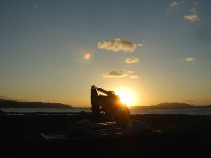
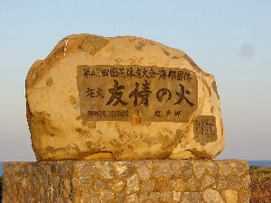
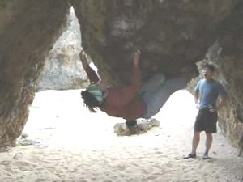

フリークラ沖縄ツアー | ２００３年１２月２８日〜２００４年１月４日 |
|---|---|
| 参加者：きっかー＆きっかー友２人（計３人） | |
 |  |
| ２８日 名古屋→那覇→辺戸名 ・移動＆ペルー料理屋で飲み食い（地元の酔っぱらいおやじと再会） ２９日 辺戸岬（宿泊：辺戸名） ・ルートクライミング：うるま１２a/b × マンモスクイナ11c/d × （あるルートにはまり、クライミング１日目にして体がもうボロボロ） ３０日 辺戸岬（宿泊：辺戸名） ・ルートクライミング マンモスクイナ11c/d × トップロープ２級× アンダギーマン11a ○ （ボロボロの体にむち打ち、登りまくる） ・地元の酔っぱらいおやじに拉致され、忘年会へ参加（飲み食いはタダだったが、たき火の番をやらされる） ３１日 辺戸名→那覇（宿泊：那覇） ・移動（クライミングレスト日） ・夜は外で早めに飲み食いしたあと、Ｋ−１及びＰＲＩＤＥを部屋のＴＶで見る | |
|  |  |
| １日 具志頭村（宿泊：那覇） ・ボルダー チョックストーンアタック 初段 × 汗水岩 ３級 ○ ２日 具志頭村（宿泊：那覇） ・きっかーは体が崩壊寸前の為、クライミングレスト日 具志頭村を一人ドライブ ３日 具志頭村（宿泊：那覇） ・ボルダー チョックストーンアタック 初段 × さんぴん茶 ３級 ○ スーパーゴーヤ茶 ２級 ○ ４日 那覇→名古屋→静岡 ・移動 | |
|  |  |
| （沖縄のお奨め） 居酒屋：ふうたん、かびら、うりずん（以上、那覇市内） 島（辺戸名） レンタカー会社：ト○タレンタカー（前回利用したニッ○ンレンタカーと比較し、待ち時間が断然短い） 宿泊先：新金一旅館（素泊まり一泊３５００円 バス・トイレ付き きれい＆国際通りから近い） 食べ物：ぐるくん、ゴーヤチャンプルー、豆腐チャンプルー、ゴーヤの揚げ物、イリチー 飲み物：泡盛、シークゥワサー、オリオンビール 番外編：てもみん（マッサージの店 旅の疲れにどうぞ！！私はクライミングの疲労回復の為でしたけど） ※毎日 夜は居酒屋に行き、沖縄の酒と料理を堪 コメント＆写真 ｂｙ キッカー | |